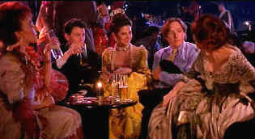

| Barcelona (SE)/ A-,B |
| Warner/1994/101/ANA 1.85 |
One
might suspect from the title that Barcelona
would be filled with travelogue views of the beautiful and sophisticated
city, but, if anything, director Whit Stillman is a mite too stingy with
postcard camera set-ups. The point is,
this is not a film about place;
it’s merely a jumping off point from which the humorous characters Stillman
has concocted may interact and share their entertaining views on life with
each other and an appreciative audience. Barcelona is not a rolling in the
aisles comedy, but for most of the film it insinuates its style and humor
into the consciousness of each person experiencing it.
Ted is the representative of a large
company doing business in Europe. He’s fascinated with the European
Trade Fair girls, lives in a comfortable apartment and is obsessed with
self help books. His life is comfortable, perhaps a trifle complacent, but
he seems to be doing an excellent job for his firm. When his cousin Fred,
a naval officer, arrives as an “advance man” for the Sixth Fleet,
nothing will ever be the same. Ted and Fred are very different spirits,
and Ted harbors ill will toward his outgoing cousin from a childhood
incident many years ago. It doesn’t help things much when he practically
insists on staying as a guest in Ted’s apartment and when they party
with some of the ladies of the Trade Fair, Fred is delighted to advise the
them of his cousin Ted’s passion for leather under garments. Fred drives
Ted up the wall.
 |
|
The old leather strap story.
©Warner
|
Barcelona is devilishly droll.
During an outing in the country, Ted, trying to explain United States
foreign policy to a radical leftist Spanish newspaper columnist,
opportunely seizes on a group of black and red ants foraging in the grass
as an example. When Ted is put on the defensive by an obnoxious
counter-attack by the columnist, Fred ends the moment with a flourish
neatly and casually crushing the red ants. It is a terrific moment. It
also serves to define the differences between the two cousins so
perfectly. Ted, caught dancing unawares in the apartment is another
wonderful scene. The humor is mixed generously with charming romance.
There is but one jarring moment when the film takes a sharp and unexpected
turn. It almost destroyed the mood the first time I saw it, but the second
time around, without the shock, Barcelona
was even better.
Stillman’s players are very appealing
and decidedly fresh. Taylor Nichols is the perfect “preppy” overseas.
Chris Eigeman shines as cousin Fred. The ladies are an interesting mix and
make for a totally appealing group. Mira Sorvino is a standout as the girl
with the sticky fingers. Stillman’s direction is at all times confident.
He knows these characters well. He guides the camera to detailed images
and handsomely lit scenes. The music by Mark Suozzo is an excellent
accompaniment to this trip to Barcelona.
Overall, Barcelona is a clean transfer,
very easy to look at, with the excellent score recorded with an
effectively open sound field. Good blacks with excellent accompanying
shadow detail. Night scenes have plenty of sparkle. People are lit
beautifully in the night scenes and the transfer replicates the effect
perfectly. Light output is very strong and contrast provides theatrical
pop. Some of the exteriors appear slightly over-exposed, though they are
supposed to be sunny. The image is delivered mostly sharp with very
little edge artifacting, though high peak edginess does sneak in
occasionally. The Chinese lanterns at the outdoor party display wonderful
color saturation.
Warner slips Barcelona in as a
deserved special edition. Audio commentary from director Whit Stillman and
stars Taylor Nichols and Christopher Eigeman is the center-piece formed
around a making of documentary, deleted scenes with commentary and an
alternate ending. It's a first-rate package.
Barcelona
is a film to visit on numerous occasions. Stillman is a taste to acquire.
|
|
|
|

Selections from the Feature
Archive include articles on Akira Kurosawa, Frank Darabont, Blonde Bimbos, Hollywood Street Gangs, or Vietnam: The Hollywood Pariah, and many
more....

Screen legend Gary Cooper won two Academy Awards© as Best
Actor during a career that included 114 Hollywood films. Click on his
image for a bio and poster images.

The Movie Poster
Archive includes extensive poster images from the films of stars like
Susan Hayward, Kirk Douglas, Katharine Hepburn and many more. Our
featured star is Errol Flynn.

 Have you visited
Home Theater
Talk lately? One of the friendliest places on the Net for Home
Theater and DVD discussion, you can get help for installation problems or
simply share your opinions with other Vidiots. Have you visited
Home Theater
Talk lately? One of the friendliest places on the Net for Home
Theater and DVD discussion, you can get help for installation problems or
simply share your opinions with other Vidiots.

Manufacturer of computer-video interfaces, switchers, distribution
amplifiers, computer-video scan converters, and high resolution cable.
Found in many high end home theater systems.

"CinemaQuest has matched the correct TV color of gray in a light
fixture."__Joe Kane
Monitor bias lighting in a pre-packaged configuration. Take the strain off
your eyes.
Werner Herzog Film
![[ Werner Herzog ]](../images/werner-herzog.jpg)
The Web site of director Werner Herzog includes lots of great material. A
perfect stop for anyone who admires his films.
|